ein blaues Licht; | 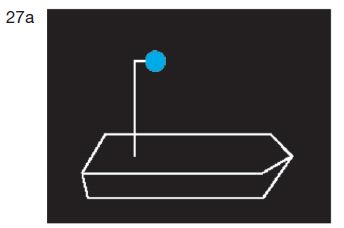 |
einen blauen Kegel mit der Spitze nach unten. | 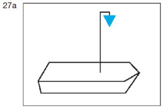 |
Das Zeichen muss an einer geeigneten Stelle und so hoch geführt werden, dass es von allen Seiten sichtbar ist. Anstelle des blauen Kegels nach Satz 1 Buchstabe b kann auch je ein blauer Kegel auf dem Vorschiff und dem Achterschiff und so hoch geführt werden, dass der Kegel auf
| 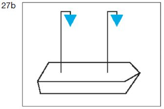 |
| sichtbar ist. |
| zwei blaue Lichter; | 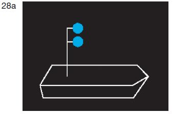 |
| zwei blaue Kegel mit der Spitze nach unten. | 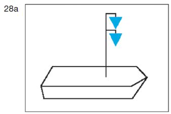 |
Die Zeichen müssen übereinander in einem Abstand von 1,00 m an einer geeigneten Stelle und so hoch geführt werden, dass sie von allen Seiten sichtbar sind. Abweichend von Satz 2 kann der Abstand zwischen den Zeichen in Abhängigkeit von den Gegebenheiten geringer gewählt werden, wenn hierdurch ihre Erkennbarkeit nicht eingeschränkt wird. Anstelle der zwei blauen Kegel nach Satz 1 Buchstabe b in Verbindung mit den Sätzen 2 und 3 können auch je zwei blaue Kegel auf dem Vorschiff und dem Achterschiff und so hoch geführt werden, dass die Kegel auf
| 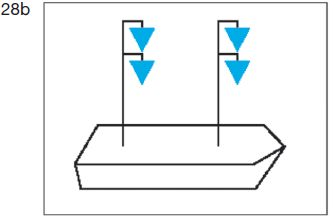 |
| sichtbar sind. |
| drei blaue Lichter; | 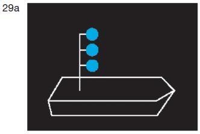 |
| drei blaue Kegel mit der Spitze nach unten. | 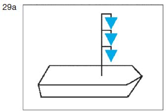 |
| Die Zeichen müssen übereinander in einem Abstand von 1,00 m an einer geeigneten Stelle und so hoch geführt werden, dass sie von allen Seiten sichtbar sind. Abweichend von Satz 2 kann der Abstand zwischen den Zeichen in Abhängigkeit von den Gegebenheiten geringer gewählt werden, wenn hierdurch ihre Erkennbarkeit nicht eingeschränkt wird. Anstelle der drei blauen Kegel nach Satz 1 Buch- stabe b in Verbindung mit den Sätzen 2 und 3 können auch je drei blaue Kegel auf dem Vorschiff und dem Achterschiff und so hoch geführt werden, dass die Kegel auf
| 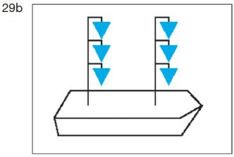 |
| sichtbar sind. |
| 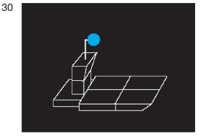 | 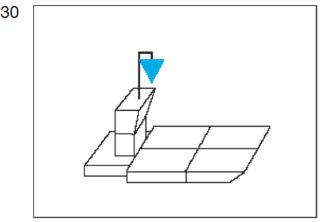 | |
| 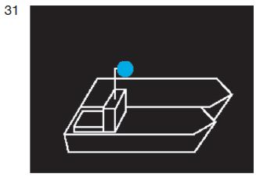 | 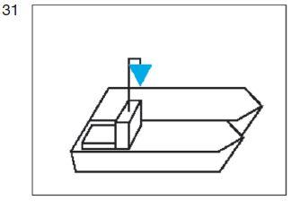 |
| 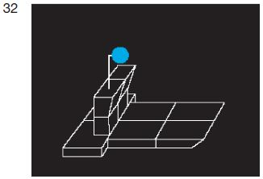 | 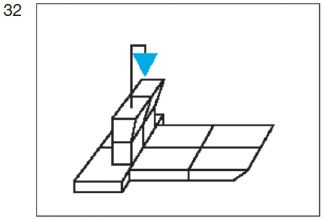 |